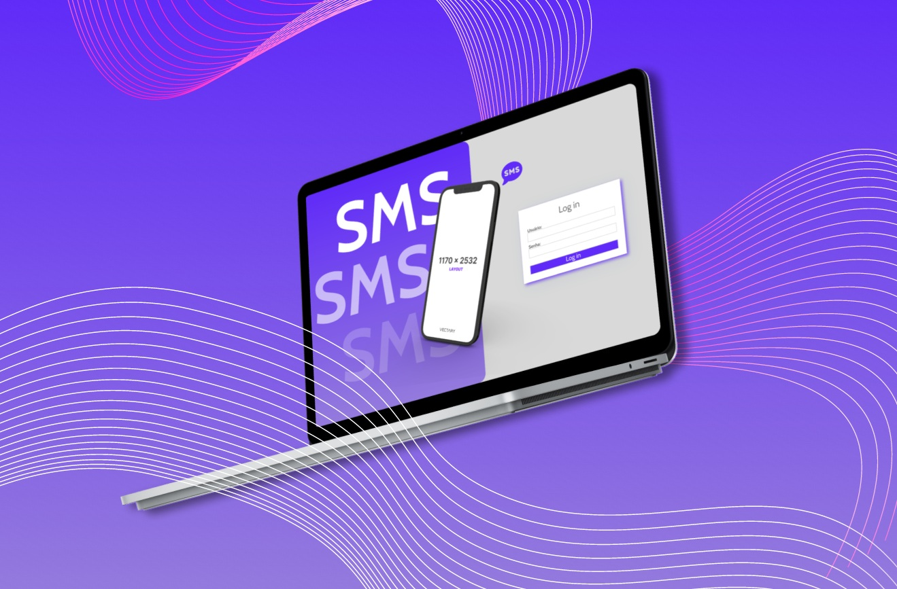
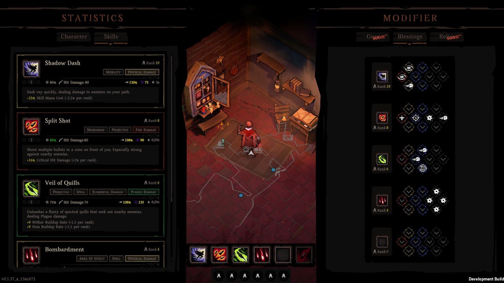

Projetos em Destaque

Automação de Testes Web
Implementação de framework de automação de testes para aplicação web de e-commerce, utilizando Selenium e Java.

Design e Prototipagem
UX Research / UI e Prototipagem de site no Figma para com foco na experiência do usuário e usabilidade.

Hell Clock Builder
Condução de testes identificando pontos de melhoria na experiência do usuário, estudo de personas, product ownership, planejamento e MVP.